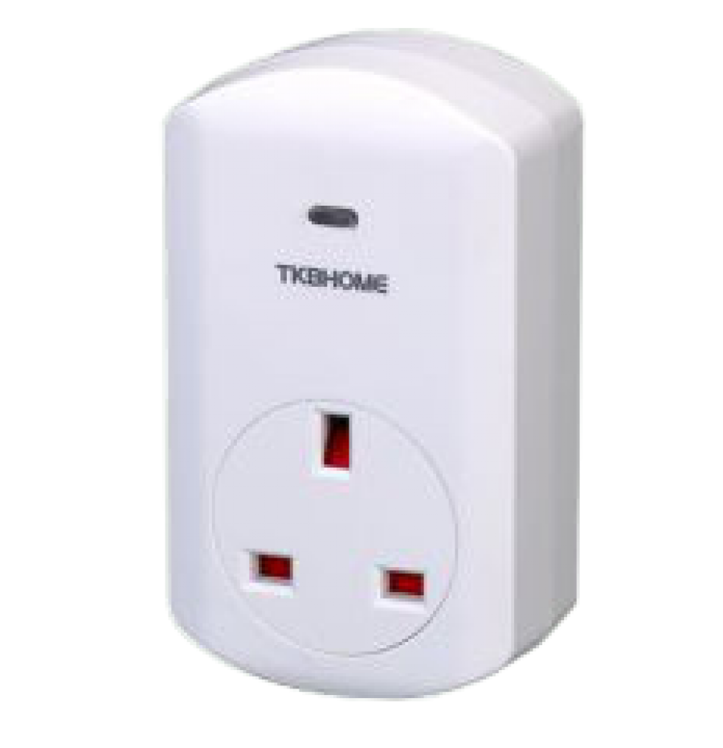
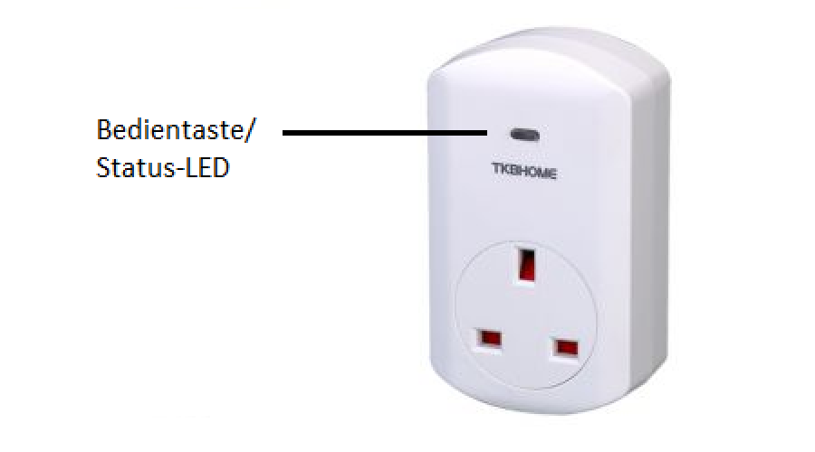

TKB_TZ68-E
Firmware Version : 1.4 |
 |
KurzinfoA Dieses Gerät ist ein Z-Wave-Aktor. Die Inklusion und Exklusion wird durch dreifaches Klicken auf die Bedientaste bestätigt. Weitergehende Informationen finden sich in den jeweiligen Abschnitten dieses Handbuches. |
Produktbeschreibung
Der TZ68 ist ein Schalt-Aktor, der als Zwischenstecker zwischen Standard-Steckdosen nach Britisch Standard und über Kabel angeschlossenen elektrischen Verbrauchern mit einer Last bis 300 W eingesetzt wird. Das Gerät mit Schutzklasse IP20 kann nur in trockenen Innenräumen eingesetzt werden. Die Bedienung erfolgt über einen Taster am Gerät oder über Z-Wave Kommandos. Der Schaltzustand wird über eine LED im Taster angezeigt.
Installationsanleitung
Das Gerät kann in jede Standard-Steckdose nach Britisch Standard gesteckt werden. Es verfügt über Schutzgrad IP20 und darf daher nicht in feuchten Umgebungen eingesetzt werden. Die Umgebungstemperatur sollte zwischen 0°C und 40°C liegen. Aus Überhitzungsgründen sollte das Gerät nicht direktem Sonnenlicht ausgesetzt werden.
Verhalten des Gerätes im Z-Wave Netz
I Im Auslieferungszustand ist das Gerät mit keinem Z-Wave-Netz verbunden. Damit es mit anderen Z-Wave Geräten kommunizieren kann, muss es in ein bestehendes Z-Wave Netz eingebunden werden. Dieser Prozess wird bei Z-Wave Inklusion genannt. Geräte können Netzwerke auch wieder verlassen. Dieser Prozess heißt bei Z-Wave Exklusion. Beide Prozesse werden von einem Controller gestartet, der dazu in einen Inklusion- bzw. Exklusion-Modus geschaltet werden muss. Das Handbuch des Controllers enthält Informationen, wie er in diese Modi zu schalten ist. Erst wenn der Controller des Z-Wave Netzes im Inclusion-Modus ist, können Geräte hinzugefügt werden. Das Verlassen des Netzes durch Exklusion führt zum Rücksetzen dieses Gerätes in den Auslieferungszustand.
Zur Bestätigung von Inklusion und Exklusion wird der Taster am Zwischenstecker Schalter betätigt.
Bedienung des Gerätes

Stecken Sie das Modul in eine Steckdose in der Nähe der zu steuernden Last. Das Gerät kann für elektrische Verbraucher mit einer Last bis 3500 W eingesetzt werden. Die Bedienung kann per Funk über Z-Wave Kommandos oder über einen Taster am Gerät erfolgen. Der aktuelle Schaltzustand wird über eine LED im Taster angezeigt.
Konfigurationseinstellungen
Z-Wave Produkte können direkt nach der Inklusion im Netz verwendet werden. Durch Konfigurationseinstellungen kann das Verhalten des Gerätes jedoch noch besser an die Anforderungen der Anwendung angepasst und zusätzliche Funktionen aktiviert werden.
WICHTIG: Manche Steuerungen erlauben nur die Konfiguration von vorzeichenbehafteten Werten zwischen -128 und 127. Um erforderliche Werte zwischen 128 und 255 zu programmieren, muss der gewünschte Wert minus 256 eingegeben werden. Beispiel: um einen Parameter auf einen Wert von 200 zu setzen, müsste der Wert 200-256 = -56 eingegeben werden, wenn nur positive Werte bis 128 akzeptiert werden. Bei Werten von 2 Byte Länge wird die gleiche Logik angewandt: Werte über 32768 werden als negative Werte angegeben
| Wert | Beschreibung |
|---|---|
| 0 | Blau leuchtet bei AUS (Voreingestellt) |
| 1 | Blau leuchtet bei AN |
Technische Daten
| Stromversorgung | 230V ~50-60 Hz |
| Schaltbare Lasten | Lasten bis 3500 W |
| Schutzklasse | 20 |
| Explorer Frames | Ja |
| SDK | 4.54 |
| Geräteart | Slave with routing capabilities |
| Allgemeiner Z-Wave-Gerätetyp | Binary Switch |
| Spezieller Z-Wave-Gerätetyp | Binary Power Switch |
| Router | Ja |
| FLiRS | Nein |
| Firmware Version | 1.4 |